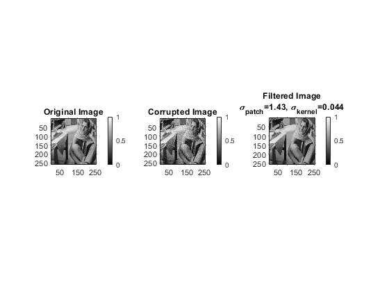
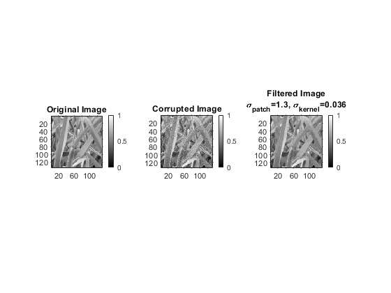
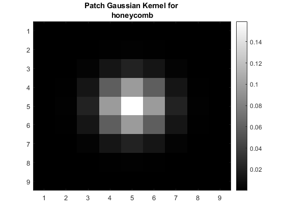

Contents
MyMainScript
tic;
Gaussian Blurring and subsampling for Barbara image
load("../data/barbara.mat", 'imageOrig')
imageOrig = imageOrig./100;
kernel_gauss = constructGaussian(0.66,9);
sampleImg = convolution(imageOrig, kernel_gauss);
sampleImg = subSampler(sampleImg,2);
Keep last parameter of myPatchBaseFiltering as 'y' for performing hyperparameter tuning and keep it as 'n' for gewnerating optimal rmsd results.
result_RMSD1 = myPatchBasedFiltering(sampleImg, "im", "barbara",'n');
result_RMSD2 = myPatchBasedFiltering("../data/grass.png", "png", "grass",'n');
result_RMSD3 = myPatchBasedFiltering("../data/honeyCombReal.png", "png", "honeycomb",'n');
toc;
barbara:
Optimal RMSE=2.494951e-02
RMSE for 0.9*sd_space=2.494951e-02
RMSE for 1.1*sd_space=2.494951e-02
RMSE for 0.9*sd_intensity=2.542819e-02
RMSE for 1.1*sd_intensity=2.516775e-02
grass:
Optimal RMSE=3.054581e-02
RMSE for 0.9*sd_space=3.054581e-02
RMSE for 1.1*sd_space=3.054581e-02
RMSE for 0.9*sd_intensity=3.144193e-02
RMSE for 1.1*sd_intensity=3.072850e-02
honeycomb:
Optimal RMSE=2.929002e-02
RMSE for 0.9*sd_space=2.929002e-02
RMSE for 1.1*sd_space=2.929002e-02
RMSE for 0.9*sd_intensity=2.972036e-02
RMSE for 1.1*sd_intensity=2.981481e-02
Elapsed time is 606.740698 seconds.


 
Sub sampling Function
function [resultImg] = subSampler(image,factor)
[m,n] = size(image);
resultImg = zeros(m/factor,n/factor);
k=1;
l=1;
for i=1:m
for j=1:n
if((mod(i,factor)==1) && (mod(j,factor)==1))
resultImg((i+1)/2,(j+1)/2) = image(i,j);
end
end
end
end
2D COnolution with cropping at the edges
function [convImage] = convolution(image, kernel)
[m,n] = size(image);
kernelSize = size(kernel,1);
ctr = (kernelSize+1)/2;
convImage = image;
for i=1:m
for j=1:n
if((i>=ctr) && (i<=(m-ctr+1)) && (j>=ctr) && (j<=(n-ctr+1)))
term = image((i-ctr+1):(i+ctr-1),(j-ctr+1):(j+ctr-1)).*kernel;
convImage(i,j) = sum(term,'all');
elseif((i<ctr))
if(j<ctr)
new_kernel=kernel((ctr-i+1):end,(ctr-j+1):end);
new_kernel=new_kernel./sum(new_kernel,'all');
term = image(1:(i+ctr-1),1:(j+ctr-1)).*new_kernel;
convImage(i,j) = sum(term,'all');
elseif(j>(n-ctr+1))
new_kernel=kernel((ctr-i+1):end,1:(ctr+n-j));
new_kernel=new_kernel./sum(new_kernel,'all');
term = image(1:(i+ctr-1),(j-ctr+1):end).*new_kernel;
convImage(i,j) = sum(term,'all');
else
new_kernel=kernel((ctr-i+1):end,1:end);
new_kernel=new_kernel./sum(new_kernel,'all');
term = image(1:(i+ctr-1),(j-ctr+1):(j+ctr-1)).*new_kernel;
convImage(i,j) = sum(term,'all');
end
elseif(i>(m-ctr+1))
if(j<ctr)
new_kernel=kernel(1:(ctr+m-i),(ctr-j+1):end);
new_kernel=new_kernel./sum(new_kernel,'all');
term = image((i-ctr+1):end,1:(j+ctr-1)).*new_kernel;
convImage(i,j) = sum(term,'all');
elseif(j>(n-ctr+1))
new_kernel=kernel(1:(ctr+m-i),1:(ctr+n-j));
new_kernel=new_kernel./sum(new_kernel,'all');
term = image((i-ctr+1):end,(j-ctr+1):end).*new_kernel;
convImage(i,j) = sum(term,'all');
else
new_kernel=kernel(1:(ctr+m-i),1:end);
new_kernel=new_kernel./sum(new_kernel,'all');
term = image((i-ctr+1):end,(j-ctr+1):(j+ctr-1)).*new_kernel;
convImage(i,j) = sum(term,'all');
end
end
end
end
end
Gaussian Kernel constructing function
function [Gaussian] = constructGaussian(sd,size)
ctr = (size+1)/2;
Gaussian = zeros(size, size);
for i = 1:size
for j = 1:size
Gaussian(i,j) = gaussian((i-ctr),(j-ctr));
end
end
Gaussian = Gaussian.*sd;
Gaussian = Gaussian./sum(Gaussian,'all');
end
Utility function for constructGaussian
function val = gaussian(x,y)
val = (1/sqrt(2*pi))*exp(-((x^2)+(y^2))/(2));
end